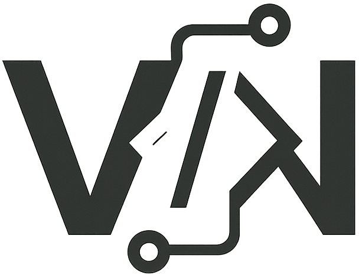

Este site tem o objectivo de ajudar jovens a encontrarem informações sobre Escolas e Universidades na província de Luanda, de forma rápida e acessível com apenas um clique — facilitando jovens angolanos e estrangeiros a terem todas as informações necessárias sobre as instituições disponibilizadas.
Site desenvolvido pela Views Net, uma Startup focada na área de tecnologia e inovação, fundada em 2024 por José Viana — jovem angolano com o objectivo de proporcionar uma óptima experiência na internet para jovens angolanos.
